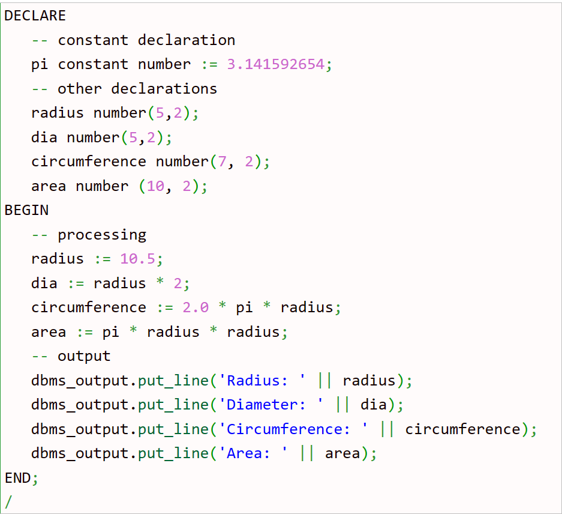
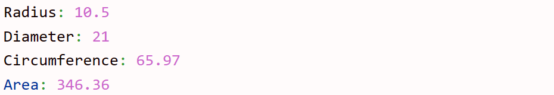

PL/SQL Constants:
A constant holds a value used in a PL/SQL block that does not change throughout the program. It is a user-defined literal value.
Syntax to declare a constant:constant_name CONSTANT datatype := VALUE;
constant_name - is a valid identifier name.
CONSTANT - is a keyword.
VALUE - is a value which must be assigned to a constant when it is declared. You cannot assign a value
later.
Example:
Output
PL/SQL Literals:
Literals is an explicit numeric, character, string or Boolean values which are not represented by identifiers i.e. TRUE, NULL, w3spoint etc. Note: PL/SQL literals are case-sensitive.
Types of literals in PL/SQL:
1. Numeric Literals (765, 23.56 etc.).
2. Character Literals ('A' '%'' '9' '' 'z' etc.).
3. String Literals (tutorialspointexamples.com etc.).
4. BOOLEAN Literals (TRUE, FALSE and NULL).
5. Date and Time Literals ('2016-12-25' '2016-02-03 12:10:01' etc.).